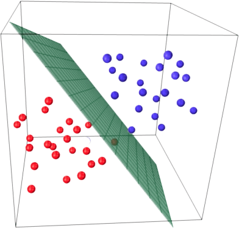

Классификация — отнесение объекта к одной из категорий на основании его признаков.
Рассмотрим задачу бинарной классификации. Пусть \( X = \mathbb{R}^d \) — пространство объектов, \( Y = {−1, +1} \) — множество допустимых ответов, \( X = {(x_i , y_i )}_{i=1}^{\ell} \) — обучающая выборка. Иногда мы будем класс «+1» называть положительным, а класс «−1» — отрицательным.
Будем считать, что классификатор имеет вид $$ a(x) = \mathrm{sign}(b(x)−t) = 2[b(x) > t] − 1. $$
В такого рода задачах возникает необходимость в изучении различных аспектов качества уже обученного классификатора. Сначала обсудим один из подходов к измерению качества таких моделей.
Матрица ошибок — это способ разбить объекты на четыре категории в зависимости от комбинации истинного ответа и ответа алгоритма (см. таблицу ml:class:tbl:2). Через элементы этой матрицы можно, например, выразить долю правильных ответов: $$ \text{accuracy} = \frac{\mathrm{TP} + \mathrm{TN}}{\mathrm{TP} + \mathrm{FP} +\mathrm{FN} + \mathrm{TN}}. $$
Таблица 2. Матрица ошибок
| \( y=1 \) | \( y = -1 \) |
| TP (True Positive) | FP (False Positive) |
| FN (False Negative) | TN (True Negatiive) |
Данная матрика имеет существенный недостаток — её значение необходимо оценивать в контексте баланса классов. Eсли в выборке \( 950 \) отрицательных и \( 50 \) положительных объектов, то при абсолютно случайной классификации мы получим долю правильных ответов \( 0.95 \). Это означает, что доля положительных ответов сама по себе не несет никакой информации о качестве работы алгоритма \( a(x) \), и вместе с ней следует -анализировать соотношение классов в выборке.
Гораздо более информативными критериями являются точность (precision) и полнота (recall).
Точность показывает, какая доля объектов, выделенных классификатором как положительные, действительно является положительными: $$ \text{precision} = \frac{\mathrm{TP}}{\mathrm{TP} + \mathrm{FP}} $$
Полнота показывает, какая часть положительных объектов была выделена классификатором: $$ \text{precision} = \frac{\mathrm{TP}}{\mathrm{TP} + \mathrm{FN}} $$
Существует несколько способов получить один критерий качества на основе точности и полноты. Один из них — \( F \)-мера, гармоническое среднее точности и полноты: $$ F_\beta = (1+\beta^2) \frac{\text{precision}\cdot \text{recall}}{\beta^2 \cdot \text{precision} + \text{recall}}. $$
Среднее гармоническое обладает важным свойством — оно близко к нулю, если хотя бы один из аргументов близок к нулю. Именно поэтому оно является более предпочтительным, чем среднее арифметическое (если алгоритм будет относить все объекты к положительному классу, то он будет иметь \( \text{recall} = 1 \) и \( \text{precision} > 0 \), а их среднее арифметическое будет больше \( 1/2 \), что недопустимо).
Чаще всего берут \( \beta = 1 \) хотя иногда встречаются и другие модификации. \( F_2 \) острее реагирует на recall (т. е. на долю ложноположительных ответов), а \( F_{0.5} \) чувствительнее к точности (ослабляет влияние ложноположительных ответов).
В sklearn есть удобная функция
sklearn.metrics.classification_report, которая возвращает recall,
precision и \( F \)-меру для каждого из классов, а также количество
экземпляров каждого класса.
from sklearn.metrics import classification_report
y_true = [0, 1, 2, 2, 2]
y_pred = [0, 0, 2, 2, 1]
target_names = ['class 0', 'class 1', 'class 2']
print(classification_report(y_true, y_pred, target_names=target_names))
Основная идея линейного классификатора заключается в том, что признаковое пространство может быть разделено гиперплоскостью на две полуплоскости, в каждой из которых прогнозируется одно из двух значений целевого класса. Если это можно сделать без ошибок, то обучающая выборка называется линейно разделимой.

Указанная разделяющая плоскость называется линейным дискриминантом.
Логистическая регрессия является частным случаем линейного классификатора, но она обладает хорошим «умением» – прогнозировать вероятность отнесения наблюдения к классу. Таким образом, результат логистической регрессии всегда находится на отрезке \( [0, 1] \). Возьмем данные по ирисам
iris = pd.read_csv("https://raw.githubusercontent.com/mwaskom/seaborn-data/master/iris.csv")
iris.describe()
sns.pairplot(iris, hue="species")
sns.lmplot(x="petal_length", y="petal_width", data=iris)
X = iris.iloc[:, 2:4].values
y = iris['species'].values
y[:5]
from sklearn.preprocessing import LabelEncoder
le = LabelEncoder()
le.fit(y)
y = le.transform(y)
y[:5]
iris_pred_names = le.classes_
iris_pred_names
from sklearn.model_selection import train_test_split
X_train, X_test, y_train, y_test = train_test_split(
X, y, test_size=0.3, random_state=0)
from sklearn.preprocessing import StandardScaler
sc = StandardScaler()
sc.fit(X_train)
X_train_std = sc.transform(X_train)
X_test_std = sc.transform(X_test)
X_train[:5], X_train_std[:5]
from sklearn.linear_model import LogisticRegression
lr = LogisticRegression(C=100.0, random_state=1)
lr.fit(X_train_std, y_train)
lr.predict_proba(X_test_std[:3, :])
lr.predict_proba(X_test_std[:3, :]).sum(axis=1)
y_test[:3]
lr.predict_proba(X_test_std[:3, :]).argmax(axis=1)
Предсказываем класс первого наблюдения
lr.predict(X_test_std[0, :].reshape(1, -1))
На основе его коэффициентов:
X_test_std[0, :]
X_test_std[0, :].reshape(1, -1)
y_pred = lr.predict(X_test_std)
len(iris_pred_names)
print(classification_report(y_test, y_pred, target_names=iris_pred_names))